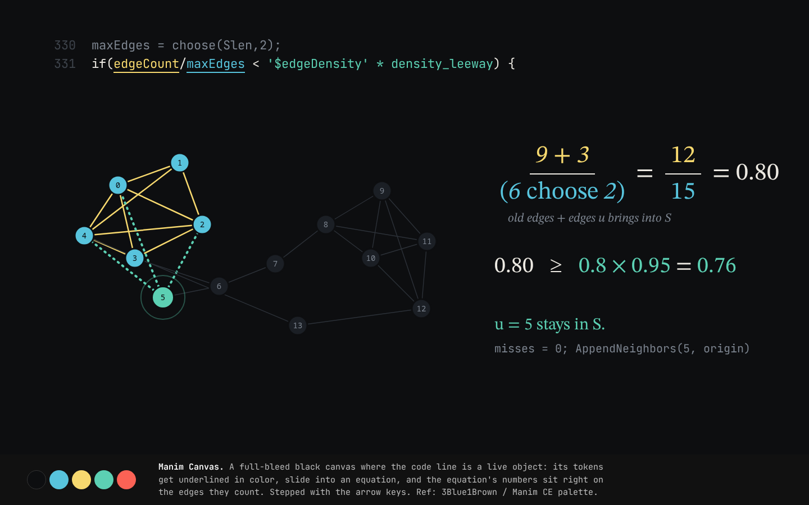
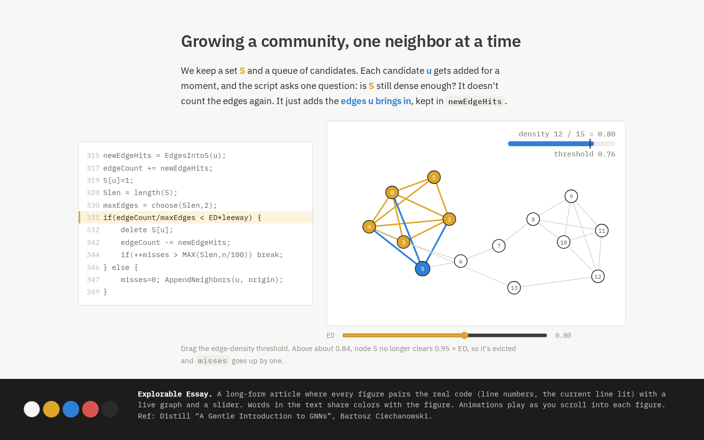
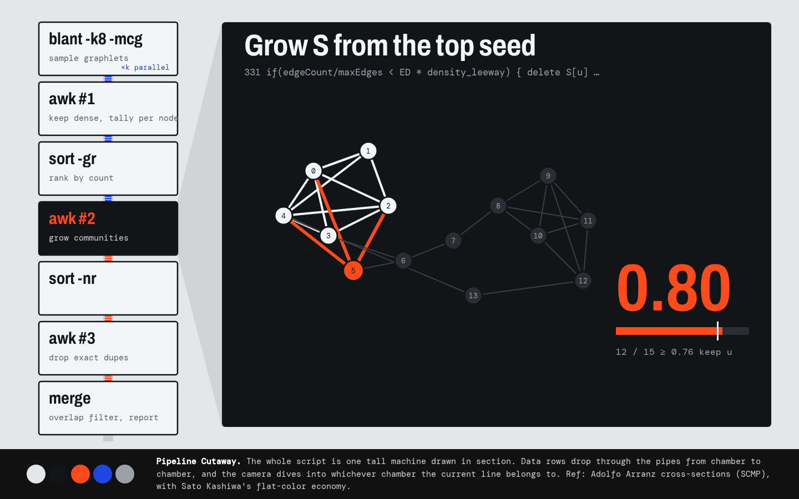

1 · Manim Canvas (built)Best designer: Grant Sanderson, 3Blue1Brown

2 · Explorable Essay (built)Real refs: Distill GNN intro + ciechanow.ski

3 · Pipeline Cutaway (built)Roulette: Arranz cross-section + Sato Kashiwa
4 · Ladder of Abstraction (alternate)Best designer: Bret Victor. One run per ED value, laid out as a strip
5 · Every Step at Once (alternate)Small multiples (Tufte): the whole BFS run in one grid
6 · One Symbol per Stage (alternate)Sato Kashiwa minimal symbols, one flat shape per stage